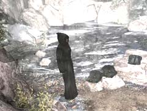

| 概要 | 地図 |
| 淡いヒント集 | ヒント集 | 的確なヒント集 |
| 攻略最短ルート |
| 場所選択に戻る |
ロマンスバーグ(前半)

修道院へ着き、がけの上にある修道院へ続くレバーを引いても、何も反応がなかっただろう。それにはちゃんとした理由があるのだ。 それは、いったい何だろうか? 答えは池で服を洗っているこの修道士が知っている。彼からできる限りのことを聞いたら、巧みにワナを仕掛け口を滑らせてやろう。そう、修道院は女人禁制なのである。では、どうすれば中に入れるだろう。 目の前の修道服をかぶれば何とかなりそうだ。 
選択をしていた修道士は鳥に興味があるという。それを利用しない手はないだろう。エミリオフ大佐の元へ行き、バードコールをもらってこよう。3つのバードコールのどれかが、修道士の好きな鳥を呼び寄せる道具になるはずだ。

修道士を遠くへ行かせたら、修道服を着てみよう。この格好で修道院のレバーを引けば、間違いなく中へ入れる。
| << 前へ |
|
| 場所選択に戻る |
| 概要 | 地図 |
| 淡いヒント集 | ヒント集 | 的確なヒント集 |
| 攻略最短ルート |
Syberia II
| 目次へ戻る | ページの上部へ |